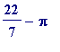
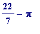
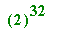
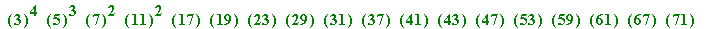

e
and
(irrationality).

The irrationality of e was first established by Euler, who concluded it from his derivation of the infinite continued fraction expansion of . I will not dwell much on this since I cannot presume a familarity with continued fraction theory on behalf of a general reader. However I show some brief computations:
> with(numtheory): # for use of 'cfrac'
Warning, the protected name order has been redefined and unprotected
> cfrac((exp(1) - 1)/2, 5); # to the 5th 'partial quotient'
>
where the pattern from the partial quotient '6' (the of the standard continued fraction notation) is continued ad infinitum :
![a[0]+1/(a[1]+1/(a[2]+1/(a[3]+1/(a[4]+1/`...`))))](images/transcendental52.gif)
> cfrac ((exp(1) - 1)/2, 50, 'quotients');
>
Everyone knows the standard classic irrationality proof of (Euler's number) e , the proof, given by Fourier in 1815, that exploits:
e
=
 (i)
(i)
Suppose for some (positive) whole numbers a and b . Then multiplying throughout (i) by n ! gives:
... (ii)
where
= , and thus
Thus (i) is impossible since (ii) - for sufficiently large n - leads to an integer (the LHS) being equal to (an integer, plus a positive error term that is less than 1). Thus e is irrational.
_________
Any obvious attempt at giving a similar irrationality proof for (say)
appears at first sight to be doomed (try it to see what I mean). In his 1949 Princeton book on Transcendental Numbers, C. L. Siegel gave an elementary proof - which I had always assumed was his own, since he didn't credit it to anyone - not only that
 is irrational, but more generally that
e
is not a quadratic algebraic number (i.e.
e
does not satisfy any quadratic equation
with integers
a
,
b
and
c
, and
is irrational, but more generally that
e
is not a quadratic algebraic number (i.e.
e
does not satisfy any quadratic equation
with integers
a
,
b
and
c
, and
 ). While preparing my Manchester 1972-73 course I made a minor improvement on Siegel's proof, by formulating another elementary proof that
). While preparing my Manchester 1972-73 course I made a minor improvement on Siegel's proof, by formulating another elementary proof that
 is irrational. That alternative proof had the advantage that incorporating the idea in Siegel's proof led to an elementary proof that
is irrational.
is irrational. That alternative proof had the advantage that incorporating the idea in Siegel's proof led to an elementary proof that
is irrational.
Although I gave a 'splinter group' talk (attended by Masser and Serre, who clearly had nothing better to do) on my proof at the BMC in 1973(?) I didn't bother to write up the proof for possible publication until 2002. I submitted it to the MAA Monthly in that year, and was just a little disappointed to learn from a scholarly referee that Siegel's proof had already been given by Liouville in 1840, and that 'my' proof was also given by Liouville in the same year (though I believe I give a better explanation that Liouville!). An interested reader may consult the submitted paper in the esquared corner of my web site.
Of course all of these elementary results are completely put in the shade with Hermite's (1873) result that e is a transcendental number.
__________
The irrationality of
 was first demonstrated by Lambert in 1766. As with Euler, continued fractions were central to his proof.
was first demonstrated by Lambert in 1766. As with Euler, continued fractions were central to his proof.
There are many different proofs that
 is irrational, but it should be said that none of them are elementary. Here my sole aim is to show you a very beautiful way of seeing that
is irrational, but it should be said that none of them are elementary. Here my sole aim is to show you a very beautiful way of seeing that
 isn't the oft-quoted
isn't the oft-quoted
 . I believe this could be understood, and how nice it would be to have it appreciated, by competent school pupils. I only came to know of this way in August 1996 while browsing in a bookshop in Blackwell's of Oxford: there I came upon a lovely integral, in a paper by van der Poorten and Bombieri, which I had never seen before: an integral with positive integrand, with value (

). What I saw fairly set my heart thumping, and I read no further as I wanted to have an opportunity to play. This is what I saw in their paper, and I hardly need comment on the obvious implications:
. I believe this could be understood, and how nice it would be to have it appreciated, by competent school pupils. I only came to know of this way in August 1996 while browsing in a bookshop in Blackwell's of Oxford: there I came upon a lovely integral, in a paper by van der Poorten and Bombieri, which I had never seen before: an integral with positive integrand, with value (

). What I saw fairly set my heart thumping, and I read no further as I wanted to have an opportunity to play. This is what I saw in their paper, and I hardly need comment on the obvious implications:
It's an easy school exercise to evaluate that integral, and I quickly show that Maple can cope with it, and more:
> Int(x^4*(1 - x)^4/(1 + x^2), x = 0..1);
> int(x^4*(1 - x)^4/(1 + x^2), x = 0..1);
> evalf(22/7 - Pi);
>
plot(x^4*(1 - x)^4/(1 + x^2), x = 0..1);
# Notice the scale on the y-axis
>
But there is so much more to be investigated, discovered, and proved . Can one explain this, can one explain that...? I did a lot of related work in August 1996, but have never done anything about it. I drop some passing hints :
> int(x^40*(1 - x)^40/(1 + x^2), x = 0..1);
> ifactor(262144);
>
ifactor(216850257105757801880233554675);
# the denominator of the approximating denominator

>
I need hardly point out that all the odd primes between 3 and 79 occur there, except for 19.
> int(x^68*(1 - x)^68/(1 + x^2), x = 0..1);
> ifactor(4294967296);

>
ifactor(9825114844989333870090599983047666848673348322555875);
# the denominator of the approximating denominator

>
One will notice that the primes 13 and 107 are 'missing' between 3 and 131.
And here I have varied the powers in the integrand:
> int(x^52*(1 - x)^76/(1 + x^2), x = 0..1);#
> ifactor(68719476736);
>
ifactor(287400053611342363537442949475728231373512239326125);
# the denominator of the approximating denominator
>
An obvious question to ask is: can
some such integral
be used to give a proof that
 is irrational?
is irrational?